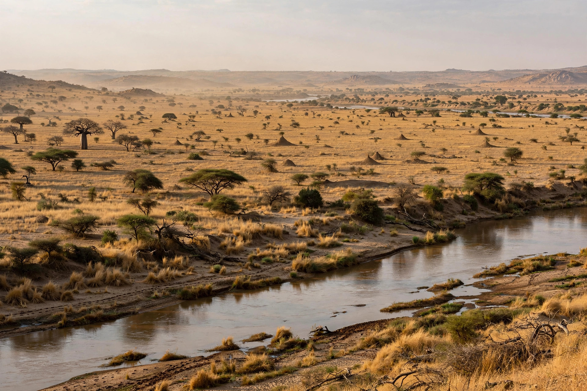

| Battle of Kirina | |
|---|---|
| Date | c. 1235 |
| Location | Kirina, near the upper Niger River (present-day Mali) |
| Result | Decisive Mandinka victory; fall of the Sosso Empire |
| Belligerents | Mandinka forces of Sundiata Keita vs. Sosso under Sumanguru Kanté |
| Commanders | Sundiata Keita; Sumanguru Kanté |
The Battle of Kirina (c. 1235) was the decisive confrontation between Sumanguru Kanté, the sorcerer-king of the Sosso Empire, and Sundiata Keita, the exiled prince of the Mandinka people, as recounted in the Epic of Sundiata. Sundiata's victory destroyed Sosso power, cleared the way for the founding of the Mali Empire — for three centuries the dominant state of West Africa — and is remembered in the griot tradition as the foundational moment of the Mandé world. Kirina is located on the left bank of the Niger, near modern Kangaba in Mali.
After the decline of the Ghana Empire, the Sosso under the Kanté dynasty subjugated the small Mandinka kingdoms of the upper Niger. Sundiata, driven into exile as a youth, returned at the head of a coalition of Mandinka clans and allied kingdoms. Earlier engagements, including the battles of Tabon and Negueboria, were indecisive, and the armies met for a final trial at Kirina.
According to the epic, Sumanguru's power rested on sorcery — a protective tana that made him invulnerable to iron. Sundiata's sister Nana Triban, who had been held at the Sosso court, escaped with the secret: the king could be harmed by an arrow tipped with the spur of a white cock. At Kirina, Sundiata loosed that arrow, grazing Sumanguru and breaking his magical protection; the Sosso king fled the field and vanished in the mountains near Koulikoro, and his army was routed.
Sundiata razed the Sosso capital and, at the assembly of Kouroukan Fouga, was proclaimed mansa (emperor) over the united Mandinka and their allies — the beginning of the Mali Empire, whose wealth in gold and whose later rulers, such as Mansa Musa, became famous across Africa and Europe. Historians treat the battle and its traditional date as broadly historical, while the details come from the epic tradition rather than contemporary documents.